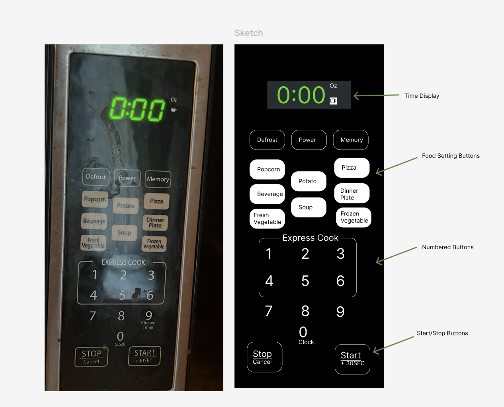

Personas and Storyboard: The Microwave
This study will step into a users shoes and explore their interactions with a microwave inferface! We'll be creating a storyboard and personas to help us understand the user experience.
Analyzing the Microwave
The microwave is a common household appliance. The interface of the microwave can be confusing and difficult to use, especially for those who are not familiar with it. In this study, we will be exploring the user experience of the microwave interface.
Microwave Interface Sketch and Picture:

Key Components & Functions:
- Time Display – Shows cooking time, power settings, and sometimes instructions or errors.
- Food Setting Buttons – Specific buttons to specify food type.
- Numbered Buttons – Buttons for numbers 0-9 to set cook time and other settings.
- Start/Stop Buttons – Buttons to Stop Microwave, Start, or add 30 seconds.
Problem the Interface Solves
- Provides a quick and accessible way for people to heat food without a stove or oven.
User Experience
- User Interacts with all buttons through physically touching pressing them down.
Using the Microwave
I observed a few people using the microwave for a variety of tasks. Below are the questions asked and key observations.
Questions Asked
General Experience
- Can you describe your overall experience using this microwave?
- What was your first impression when you approached it?
- Have you used a microwave like this before? How did this one compare?
Expectation vs. Reality
- What did you expect when you first interacted with this microwave?
- Were there any features or steps that surprised you? If so, why?
- Was the process as fast or efficient as you expected? Why or why not?
Usability & Challenges
- Did you encounter any difficulties using this microwave? If so, what happened?
- Were there any buttons, labels, or instructions that were unclear?
- Was there anything frustrating about the process?
- If you made a mistake, how easy was it to recover?
Decision-Making & Motivation
- Why did you choose to use this microwave instead of another method (e.g., stove or oven)?
- What features did you find most helpful in using the microwave?
- Did you hesitate at any point? If so, why?
Improvements & Suggestions
- If you could change one thing about this microwave, what would it be?
- Do you think someone using this microwave for the first time would find it intuitive?
- Have you seen other microwaves that do this better? If so, how?
Key Observations
- Users primarily interact with the microwave in a straightforward, transactional manner, often using the "+30 seconds" button to heat food.
- Most users found the microwave easy to use without needing to consult a manual, relying on basic functions rather than advanced features.
- The interface is generally intuitive, though some users struggled with setting an exact time or using the defrost function, particularly due to the need to input a weight.
- Users expected immediate feedback, such as a beep and the microwave turning on, after pressing a button.
- The design was considered clear and functional, but visually impaired users might find it challenging due to small buttons and labeling.
Microwave User Personas
Based on the interactions I observed, I created the following two personas using an empathy map.
Microwave Storyboard
Below is a storyboard of Cautious Calvin using the microwave to defrost his chicken:

Conclusion
The study of microwave user interactions highlights both the intuitive aspects and challenges of its interface.
While most users found basic functions easy to use, some struggled with advanced features like defrosting due to unclear instructions.
These insights emphasize the importance of designing microwaves with clearer labeling, better feedback, and more accessible controls to enhance usability for all users.